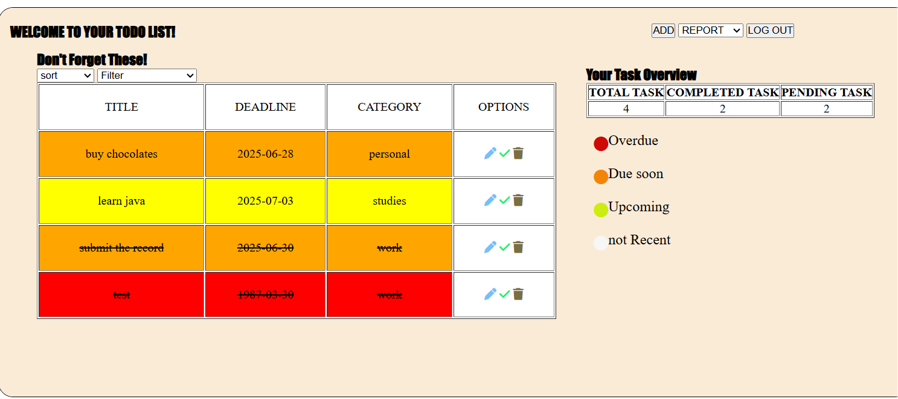

This is a feature-rich to-do list web app developed as part of my internship at GeckoLyst Solutions Private Limited.
The application enables users to add, edit, delete, and mark tasks as complete.
Each task is highlighted with a color based on how close it is to its deadline—making it easier to prioritize work.
Users can sort and filter tasks by deadline, status, and urgency, and view weekly or monthly productivity reports.
To ensure data persistence, all task details are stored in the browser’s local storage, allowing users to retain their to-dos even after refreshing or closing the page.